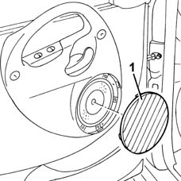

7005E22 l/h or r/h front door panel radio grille (one) - r+r
- Path
- Procedures > 70 FITTINGS > 7005 PASSENGER COMPARTMENT FRONT SIDE DOORS > 7005E front side door trim > 7005E22 l/h or r/h front door panel radio grille (one) - r+r
- Kind
- repair procedure (removal / refitting; the operation number is the code)
- Applies to
- all engines; all production periods
- Interactive page
- https://sloeber94.github.io/elrnDB-fMltpl/en/#/2892042
Applies to: all engines; all production periods
 Removing
Removing
 Refitting
Refitting1. Prise off the loudspeaker grille.

Applies to: all engines; all production periods
Refitting
RemovingCheck that the loudspeaker grille is undamaged and that the retainers are in good condition.
Fit the loudspeaker grille.
Topics that link to this page (18)
- 5505B11 front door wiring - r r
- 5570T90 front speaker - r r
- 7005A05 front side door water guard protection r r or arrange
- 7005A28 front side door limiter- repair or replace
- 7005C11 front side door outside handle r r
- 7005C35 barrel for front side door lock - r+r
- 7005C43 link connecting front side door barrels/catch - r+r
- 7005C51 front side door inner catch device - r+r for repair or replacement
- 7005C67 front side door safety catch link r r
- 7005D15 front side door descending window glass r r
- 7005D18 front side door descending window glass channel r r
- 7005D23 front side door descending window glass guide one r r
- 7005D30 front side descending window glass scraper (inner) r r
- 7005E10 front side door inner panel - r r for replacement
- 7005E38 front side door interior handle-r r
- 7005M21 front side door electrically operated window - r r
- 7005M25 front side door electrically operated window mechanism chech position and fastening
- 7005N21 front side door lock motor-lock assembley-r r